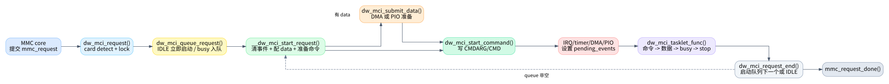

02. 一个 request 的生命周期
这一篇只讲一次 mmc_request 怎么从进入驱动到回调
mmc_request_done()。先不纠结所有错误分支，把正常读/写路径跑通，后面看
tasklet 状态机会轻很多。

1. 从 MMC core
进入：dw_mci_request()
MMC core 调 .request 后进入
dw_mci_request()，定义在
kernel/drivers/mmc/host/dw_mmc.c:1469。这个函数做三件事：
- 通过
mmc_priv(mmc)找到slot，再找host。 - 检查卡是否存在；如果不存在，直接给
mrq->cmd->error = -ENOMEDIUM并mmc_request_done()。 - 拿
host->lock，把请求交给dw_mci_queue_request()。
这里还可以看到一个 Rockchip/RV1106
特例：host->is_rv1106_sd 时请求前会 reset 控制器，见
kernel/drivers/mmc/host/dw_mmc.c:1490。
2.
排队与立即启动：dw_mci_queue_request()
dw_mci_queue_request() 定义在
kernel/drivers/mmc/host/dw_mmc.c:1441。它是“控制器级串行化”的入口。逻辑很简单：
| 当前状态 | 行为 |
|---|---|
STATE_IDLE |
设置 STATE_SENDING_CMD，立即
dw_mci_start_request() |
| 其他状态 | 把 slot 挂到
host->queue，等当前请求结束后再启动 |
STATE_WAITING_CMD11_DONE |
打 warning，并尽量恢复到 STATE_IDLE 后继续 |
这说明 dw_mmc.c 的请求状态机一次只处理一个 active
request。排队发生在 host 层，不是每个状态都能并发推进。
3. 选择首个命令：sbc
优先
dw_mci_start_request() 很短，定义在
kernel/drivers/mmc/host/dw_mmc.c:1430。它只做一件重要的事：如果
request 有 mrq->sbc，先发 sbc；否则发
mrq->cmd。
sbc 是 set block count 命令。tasklet 后面会在
sbc 成功完成时重新调用
__dw_mci_start_request() 去发真正的
mrq->cmd，对应分支在
kernel/drivers/mmc/host/dw_mmc.c:2204。
4.
真正启动请求：__dw_mci_start_request()
__dw_mci_start_request() 定义在
kernel/drivers/mmc/host/dw_mmc.c:1363。它是一次 request
的启动核心，可以按顺序读：
| 顺序 | 代码位置 | 做了什么 |
|---|---|---|
| 1 | kernel/drivers/mmc/host/dw_mmc.c:1373 |
host->mrq = mrq，清空
pending_events/completed_events/cmd_status/data_status/dir_status |
| 2 | kernel/drivers/mmc/host/dw_mmc.c:1384 |
如果命令带 data，设置 TMOUT/BYTCNT/BLKSIZ |
| 3 | kernel/drivers/mmc/host/dw_mmc.c:1394 |
dw_mci_prepare_command() 组装 CMDR bits |
| 4 | kernel/drivers/mmc/host/dw_mmc.c:1400 |
有 data 时先 dw_mci_submit_data() 准备 DMA/PIO |
| 5 | kernel/drivers/mmc/host/dw_mmc.c:1405 |
dw_mci_start_command() 写
CMDARG/CMD，真正启动硬件命令 |
| 6 | kernel/drivers/mmc/host/dw_mmc.c:1407 |
CMD11 特殊 timer |
| 7 | kernel/drivers/mmc/host/dw_mmc.c:1427 |
预先计算 stop/abort 命令寄存器值 |
一个关键点：有数据的请求会先准备 data path，再发 command。原因是命令一旦被控制器接受，数据中断/DMA 可能很快发生；驱动必须提前把 DMA/PIO/FIFO 环境布好。
5. 命令是如何启动的
dw_mci_prepare_command() 在
kernel/drivers/mmc/host/dw_mmc.c:283。它根据
opcode、response 类型、是否带 data、是否需要 stop、是否 CMD11 来设置
CMDR bits。
dw_mci_start_command() 在
kernel/drivers/mmc/host/dw_mmc.c:428。它把
host->cmd 指向当前命令，写
CMDARG，等待控制器不 busy，写
CMD | START。如果命令期待 response，还会启动 command
timeout timer，见
kernel/drivers/mmc/host/dw_mmc.c:442。
命令完成后，IRQ 或 CTO timer 会设置
EVENT_CMD_COMPLETE。tasklet 消费后调用
dw_mci_command_complete()，读取 response 并把
RTO/RCRC/RESP_ERR 转换成 cmd->error，见
kernel/drivers/mmc/host/dw_mmc.c:2004。
6.
请求如何结束：dw_mci_request_end()
dw_mci_request_end() 定义在
kernel/drivers/mmc/host/dw_mmc.c:1967。它是所有成功/失败路径最终汇合点。核心逻辑：
- 当前 request 已经没有
host->cmd和host->data，否则WARN_ON。 - 如果队列非空，取下一个 slot，设置
STATE_SENDING_CMD，直接启动下一个 request，见kernel/drivers/mmc/host/dw_mmc.c:1980。 - 如果队列为空，普通情况回
STATE_IDLE；如果刚完成的是 CMD11，则进入STATE_WAITING_CMD11_DONE，见kernel/drivers/mmc/host/dw_mmc.c:1992。 - 解锁后调用
mmc_request_done(prev_mmc, mrq)，再重新加锁，见kernel/drivers/mmc/host/dw_mmc.c:1998。
解锁再回调是必要的：mmc_request_done()
可能触发上层继续提交请求，驱动不能在持有 host lock 时把控制权交回 MMC
core。
7. 三条最常见请求路径
| 请求类型 | 主路径 |
|---|---|
| 无数据命令 | request -> queue -> start command -> EVENT_CMD_COMPLETE -> command_complete -> request_end |
| 正常读/写 | request -> submit_data -> start command -> CMD complete -> SENDING_DATA -> XFER complete -> DATA_BUSY -> DATA complete -> request_end/stop |
| 多块读写带 stop | 正常数据路径完成后，若需要 data->stop 且不是
sbc 请求，发送 stop/abort，进入
STATE_SENDING_STOP，等待 stop 命令完成后
request_end |
读 tasklet 时，把这三条路径放在脑子里，复杂分支就容易归位：它们不是随意跳转，而是在处理命令失败、数据失败、stop 失败、CMD11 这几个例外。